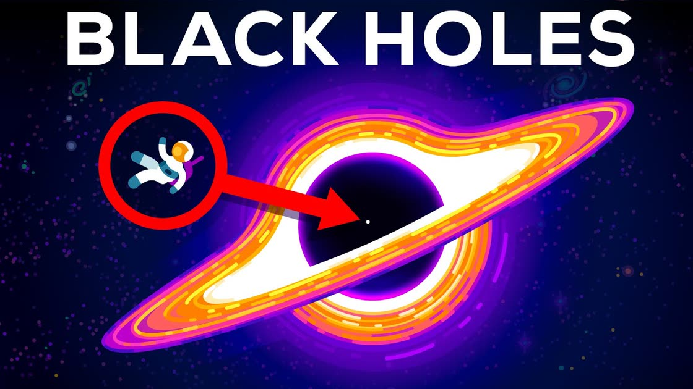
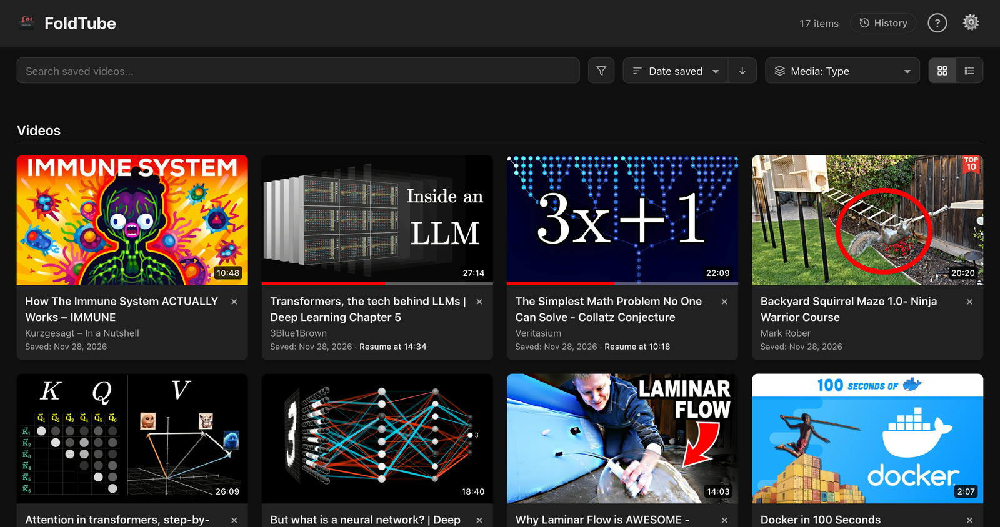
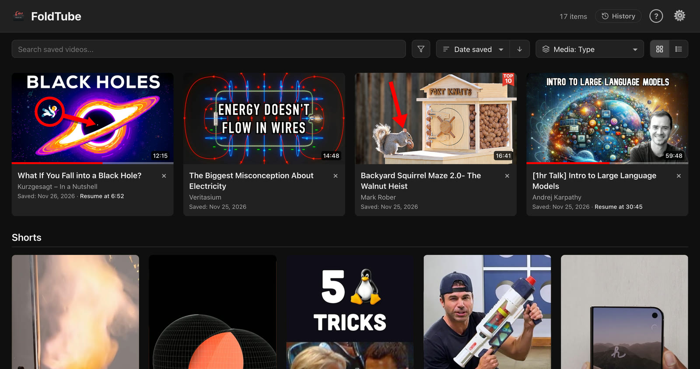
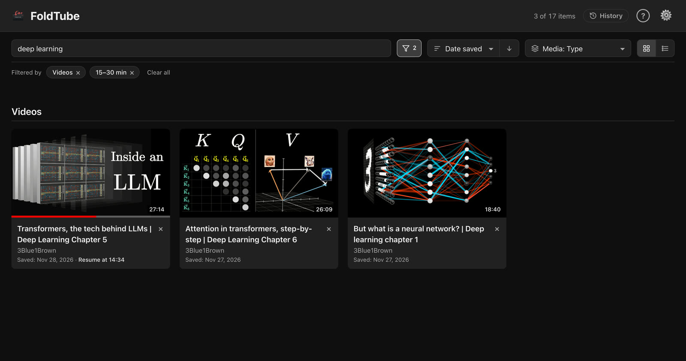
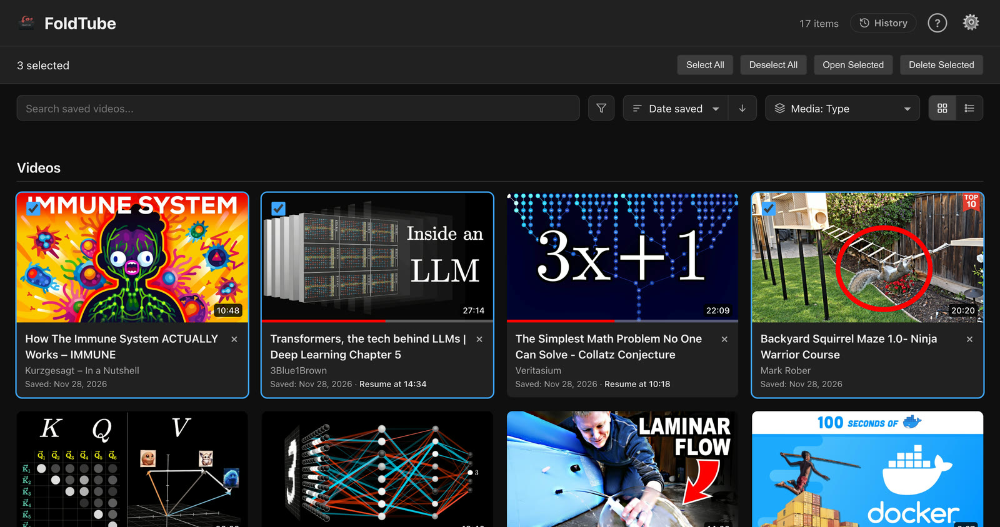
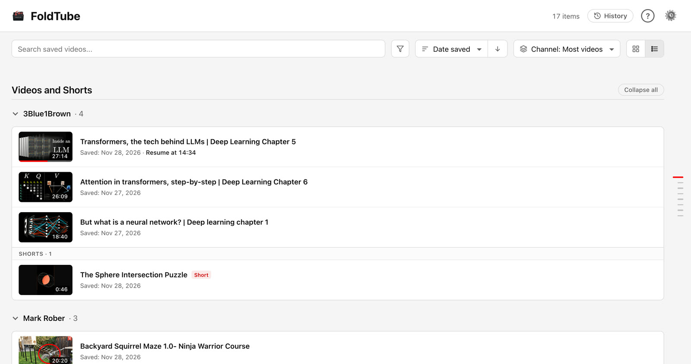
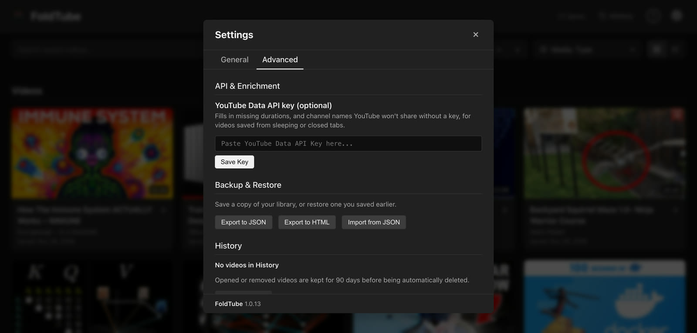

Watch & Resume
Every YouTube tab, one clean list.
Fold all your open YouTube tabs in one click and pick up right where you left off.
Stop losing videos in a sea of open tabs. One click saves and closes every YouTube tab, speeds up your browser, and keeps your watch list searchable and ready to resume.
Scroll to see it foldScroll down or click the FoldTube button to save and close every open YouTube tab at once.
 FoldTube — Dashboard
FoldTube — Dashboard







Fold all your open YouTube tabs in one click and pick up right where you left off.
Search titles or channels and filter by Videos, Shorts, or how much time you have.
Select multiple videos at once — backed by instant Undo and 90-day History.
Switch between grid or a compact list, in Light or Dark mode — or let your system choose.
Your watch list never leaves your browser, with one-click JSON and HTML backups anytime.
Group your list by Videos and Shorts or by creator, collapse channels you've already browsed, and jump straight to any channel.
Folding remembers where you paused. Click any saved video later to jump straight back to that exact moment.
No account, no servers, and no tracking. Your list stays in your browser, with one-click JSON and HTML backups whenever you want.
Have 5 minutes or an hour? Search across titles and channels, or filter by Videos, Shorts, and how long you want to watch.
Opened or removed a video by accident? Hit Undo right away, or bring it back from History up to 90 days later.
Switch between grid or a compact list, in Light or Dark mode — or let your system choose.
Install FoldTube in seconds. Free forever, open-source on GitHub, and completely on your device.